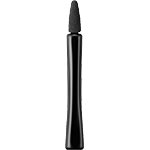

返回列表
产品名称：オーブ クチュール アイシャドウチップ ０７

花王 オーブ クチュール アイシャドウチップ ０７ １本
メーカー 花王
JANコード 4901301298041
商品の特徴
オーブ クチュール アイシャドウ用チップです。
成分・分量
-
用法及び用量
＜使用方法＞
チップが汚れた時は、中性洗剤を少量渡溶かし軽く使い、指先で軽く押し洗いしてください。
よくすすいでだあと、タオルで水気をとり、日かげで充分乾かしてからお使いください。